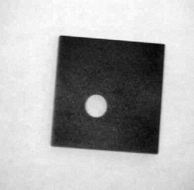
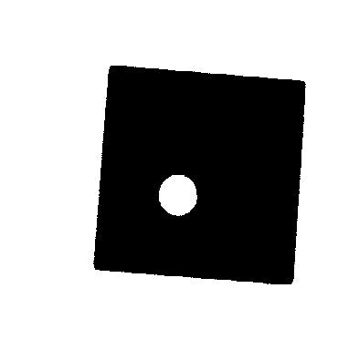
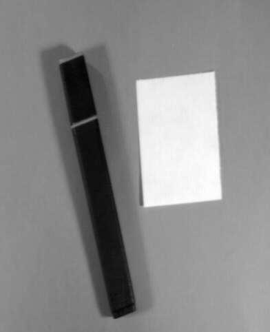
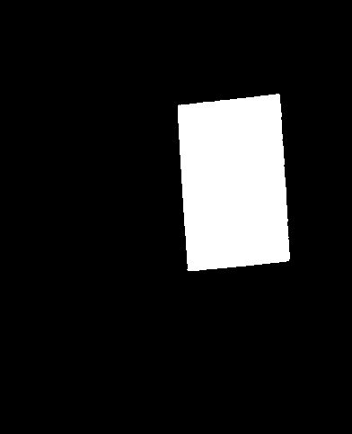
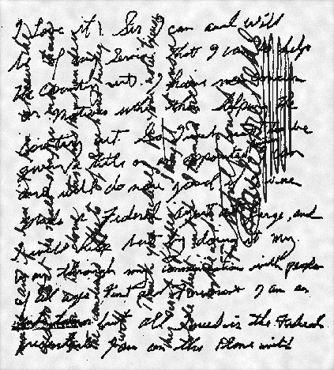
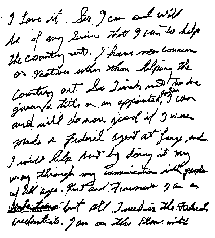
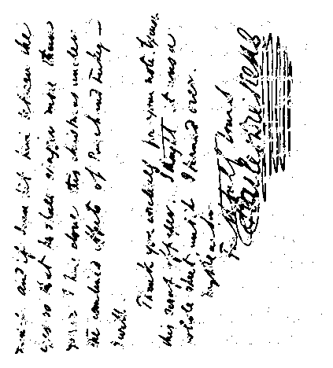

For some images thresholding can be straightforward.
For instance, thresholding the following image
using Tsai's moment matching algorithm or Otsu's minimum variance method
produce very similar results.


On the other hand, other images are trickier, and so thresholding the following image
using Tsai's moment matching algorithm: or Otsu's minimum variance method:
produce significantly different results.


Write a program to threshold the above widget. Try this simple algorithm: threshold at the mean image intensity.
Once you've got that going try out the algorithm on thresholding a small widget, an edge detected version of the widget, and the image above of a pen and paper.
The following image is an example of underwriting. That is, it is a photograph of a piece of paper that has been written on twice, in both the horizontal and vertical directions. One set of handwriting was made by Dickens and the other is by Elvis Presley! What would you expect the intensity distribution of the image to look like? Write a program to extract out each of the two messages.
Your results should look like:


